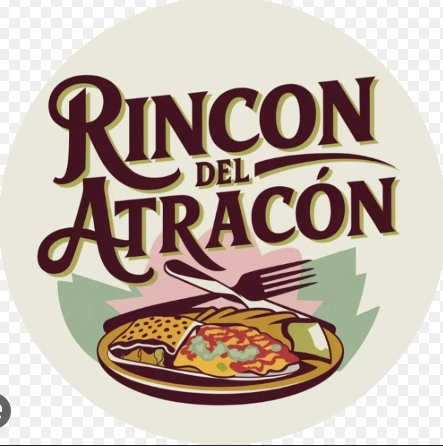
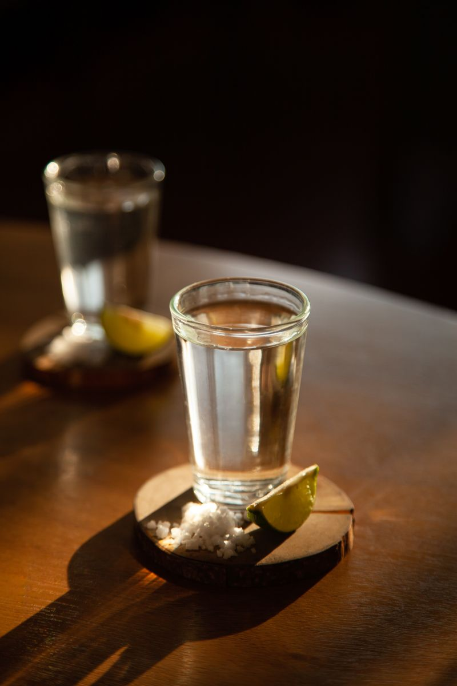
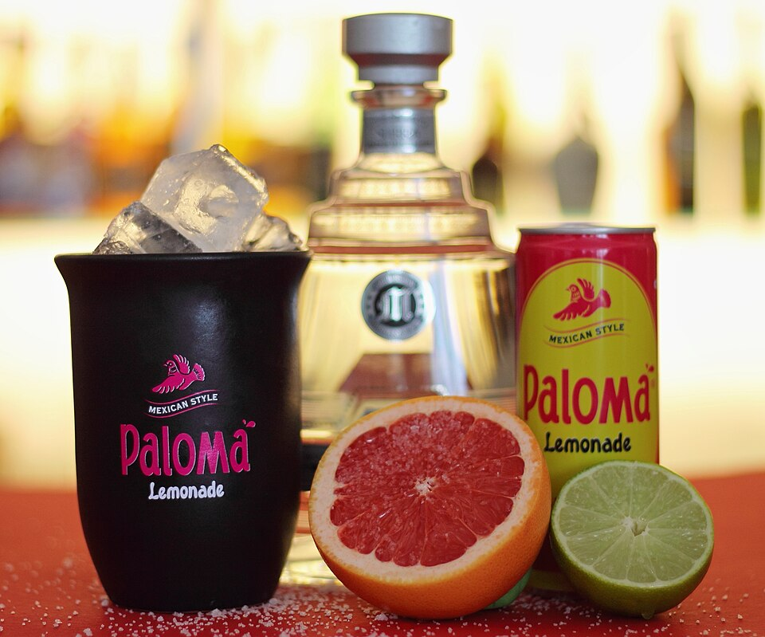

Pozole rojo
Pierna, lengua, cachete, oreja, pata, trompa o pollo.
MI$65CH$75M$85G$95

Rincón delPierna, lengua, cachete, oreja, pata, trompa o pollo.

Pollo, pierna, picadillo, res o sencillas.
Pollo, pierna, picadillo, res o sencillas.

Pierna, cachete, oreja, pata, trompa o pollo. También lengua, pata sin hueso o surtida.

Pollo, pierna, picadillo, rajas, requesón, champiñones, chicharrón, papa o chorizo con papa.

Pollo, pierna, picadillo, rajas, requesón, champiñones, chicharrón, papa o chorizo con papa.

Pollo, pierna, picadillo, rajas, requesón, champiñones, chicharrón, papa o chorizo con papa.

Pollo, pierna, picadillo, rajas, requesón, champiñones, chicharrón, papa o chorizo con papa.

Pollo, pierna, picadillo, rajas, requesón, champiñones, chicharrón, papa o chorizo con papa.

Pregunta por los sabores disponibles.

Presentación de 500 ml.


Pregunta por los sabores disponibles.

Postre a base de leche, azúcar, huevo, canela y vainilla, con una capa de azúcar caramelizada en la parte superior.

Consulta marcas, presentación y precio disponibles.

Consulta presentación y precio.

Consulta presentación y precio.
Consulta presentación y precio.

Consulta presentación y precio.

Consulta presentación y precio.
Fotografías de referencia; presentación e ingredientes pueden variar. Créditos fotográficos.
Música en vivo · Consulta días y horarios ↗
El Parián · San Pedro Tlaquepaque, Jalisco.
La ubicación exacta del local está pendiente de confirmar.
Cómo llegar ↗Consulta ingredientes y alergias con nuestro personal.
Precios en MXN. Fotografías ilustrativas; la presentación puede variar.